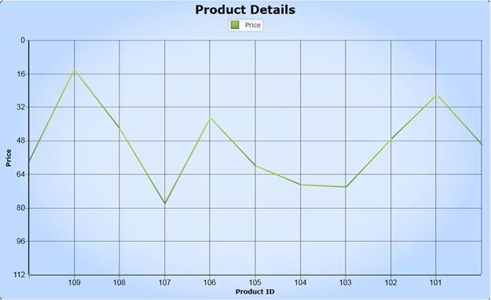

Essential Chart provides support for inverting the values on the axis. Data on an inverted axis is plotted in the opposite direction - Top to Bottom for Y-axis and Right to Left for X-axis. To enable this behavior, set the IsInversed property of ChartAxis control to True.
Use Case Scenarios
Inversed Axis support helps to reverse the label of the chart axis by showing it in reverse order. This feature is similar as the Arabic Culture which supports Right-To-Left reading.
Adding IsInversed to an Application
Essential Chart Silverlight provides support to reverse the labels of the chart axis. You can initialize the IsInversed property of the ChartAxis control to True, in order to arrange the axis of the labels in reverse order. The following code snippet illustrates how to initialize the IsInversed property in both XAML and C#.
|
[XAML] <sync:ChartArea.SecondaryAxis > <sync:ChartAxis IsInversed="True" > </sync:ChartAxis> </sync:ChartArea.SecondaryAxis > |
|
[C#]
Chart1.Areas[0].SecondaryAxis.IsInversed = true; |
Properties
|
Property |
Description |
Type |
Data Type |
Reference links |
|
IsInversed |
Enables to inverse the Chart. |
Dependency Property |
Bool |
Not Applicable |

Figure 86: IsInversed
Sample Link
<<EssentialStudioInstalledLocation>>\Syncfusion\EssentialStudio\8.4.0.7\Silverlight\Syncfusion.Chart.Silverlight.Samples\Samples\Axes\ InversedAxis.xaml”